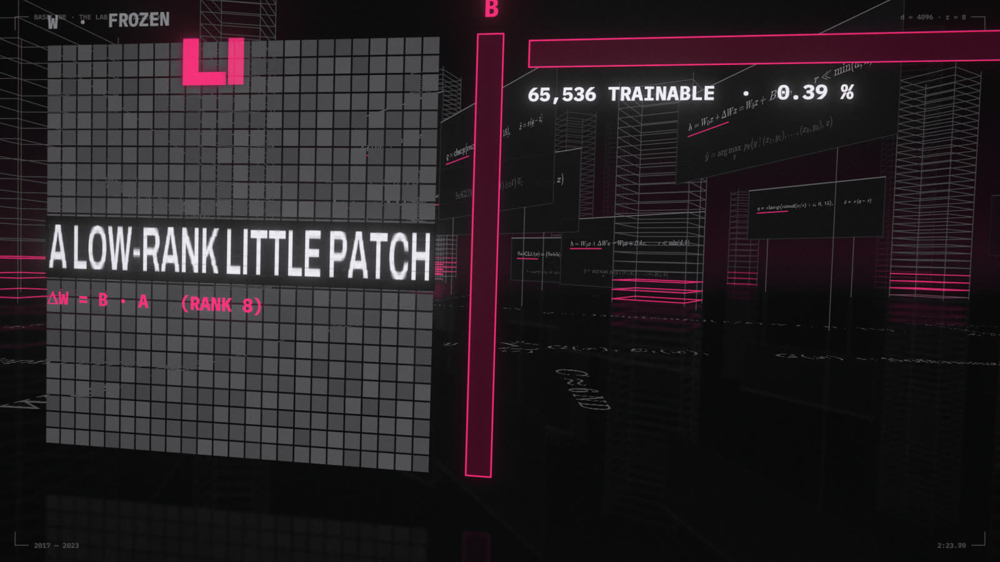
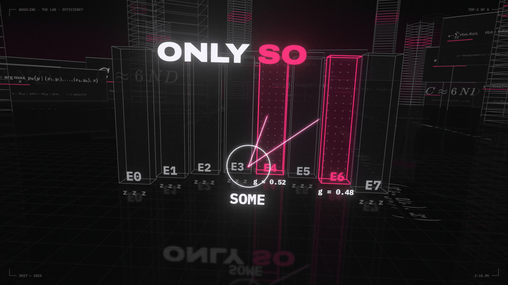
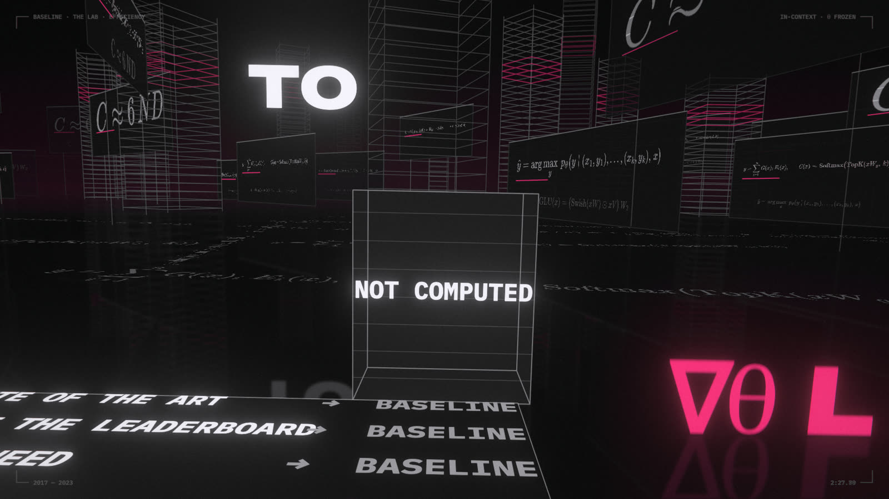

Verse 3 covers two ways to generate data, the parts list of a modern LLM, and three tricks that make LLMs cheap enough to run and adapt. In this module you download a real LLM, then quantize and fine-tune it yourself.

2:23 · THE LAB · EFFICIENCY · LORA: thin B and A plates lay a rank-8 patch over the frozen W. 65,536 trainable, 0.39%.
LAB · open notebooks/03_the_lab.ipynb in Jupyter. Each section below names the notebook section that runs it. Dotted words show a definition when you hover or tap them.
3.1 · 2014
GANs played a two-player game
A forger and a detective train against each other until the forgeries look real, or the forger gets lazy.
A familiar idea first
Spam vs the spam filter
Spammers adapt to the filter and the filter adapts to the spammers. A GAN builds that arms race on purpose, with two networks, and then keeps the spammer.
In a GAN the generator turns noise into samples and the discriminator tries to catch them. Each one's loss is the other one's win. GANs often suffer mode collapse: the generator finds a few outputs that fool the discriminator and stops exploring.
2:02 · THE LAB · GENERATIVE · COLLAPSED: the terrain folds into one spike and the other wells go dark. MODES 01/25.
Back then
GAN training was famously finicky. Hyperparameters that worked for one dataset diverged on the next, and a run could collapse after days. Whole papers were just collections of tricks to keep training stable.
The business side
GANs brought photorealistic fake faces (thispersondoesnotexist.com, 2019) and deepfakes, and with them a market for detection tools and new laws on synthetic media.
Lore
Ian Goodfellow says he came up with GANs while arguing with friends at a Montreal bar in 2014, then coded it that night, and it worked on the first try. Within a few years a GitHub list called "The GAN Zoo" tracked hundreds of named variants.
3.2 · 2015–20
Diffusion: denoise in a thousand tiny steps
Teach a network to remove a little noise; to generate, start from static and remove noise a thousand times.
A familiar idea first
Restoring a photo, over and over
Removing a little noise from a slightly noisy photo is an easy, well-defined job. Do it 1,000 times starting from pure static and the "restoration" invents an image. Many small, easy edits add up to one hard result, like successive approximation.
A diffusion model needs no adversary: it's a plain regression on the added noise, so there's nothing to collapse. In the lab DDPM covers all 25 modes while the GAN covers a handful.
2:04 · THE LAB · GENERATIVE · DENOISE: each word condenses out of noise along a real DDPM trajectory. The odometer counts t.
Back then
The 2015 paper, inspired by non-equilibrium thermodynamics, was mostly ignored for five years, because samples took a thousand network calls. DDPM (2020) made the quality undeniable. Stable Diffusion (2022) put it on everyone's GPU.
The business side
Stability AI released Stable Diffusion's weights openly in 2022. Within a year image generation went from research demo to an industry (Midjourney, Adobe Firefly), and to lawsuits over training data.
Lore
Early image models could not draw hands. Six-fingered hands became the meme of 2022–23 AI art.
3.3 · 2021
Sinusoids gave way to RoPE's rotation
Rotate each query and key by its position, so attention only sees how far apart two tokens are.
A familiar idea first
Clock hands
Hands at 3:00 and 5:00 are as far apart as hands at 9:00 and 11:00: the angle between them depends only on the difference. The dot product of two vectors depends on the angle between them. So rotate each vector by its position, and the score depends only on how far apart two tokens are, not where they are.
Attention is order-blind, so position must be injected with a position encoding. RoPE rotates vectors by an angle proportional to position, so their dot product depends only on the difference. The lab checks it: positions (5, 2), (105, 102) and (1005, 1002) give the same score.
2:09 · THE LAB · GENERATIVE · ROPE: each ring of the tunnel is a position m, with eight frequency needles turned by m·θᵢ.
Back then
Models trained on 2K tokens fell apart on 4K. Position schemes that generalize to longer inputs were the bottleneck for long context, and RoPE variants (with "scaled" frequencies) became the standard fix.
The business side
Context length became a product feature with a price tag. Stretching RoPE to longer inputs (position interpolation, YaRN) let companies extend existing models instead of retraining from scratch.
Lore
RoPE was first published by Su Jianlin on his Chinese-language blog before the RoFormer paper. A blog post became the position encoding in most open LLMs.
3.3 · 2019–20
LayerNorm → RMSNorm, ReLU → SwiGLU
Two small parts swapped for cheaper or better ones, and nobody can fully say why the new ones work better.
A familiar idea first
Auto-levelling audio
A mixing desk keeps every stage's volume in range so the next stage is neither overdriven nor inaudible. LayerNorm removes the offset and sets the volume; RMSNorm only sets the volume, and that turns out to be enough.
RMSNorm drops LayerNorm's mean subtraction: cheaper, and as good. SwiGLU replaces the MLP's ReLU with a learned gate. A real LLM's config lists silu, rms_norm_eps and rope_theta: the verse's parts list.
2:11 · THE LAB · GENERATIVE · LAYERNORM → RMS: 16 real residual activations, centered and scaled, then only scaled.
Back then
Normalization layers were essential and poorly understood. BatchNorm's original "internal covariate shift" explanation was challenged in 2018, and in 2017 Ali Rahimi's NeurIPS talk compared the field to alchemy.
The business side
Small savings per layer compound. An operation done in every layer, for every token, of every request shows up directly in the serving bill.
Lore
Noam Shazeer's SwiGLU paper ends: "we attribute their success, as all else, to divine benevolence." It's the field's most-quoted shrug.
3.4 · 2017
Dense became a mixture of experts
Many specialist sub-networks, a router picks two per token: huge capacity, modest compute.
A familiar idea first
A load balancer for specialists
Like a router sending each request to one of several specialized microservices: the fleet is big, but each request touches only a couple of services. The load-balancing loss stops one service from getting all the traffic.
A mixture of experts replaces one MLP with E experts and a router that sends each token to its top-k. In the lab a toy router learns a division of labor by itself, and a load-balancing loss keeps it from favoring a few.
LAB · notebook §3.4

2:16 · THE LAB · EFFICIENCY · EXPERTS: for each word a real top-2 router lights two of eight expert towers.
Back then
Dense models cost compute for every parameter on every token. MoE decoupled parameter count from cost, but brought distributed-training headaches: experts on different GPUs, uneven routing, and a lot of network traffic.
The business side
MoE separates what a model knows (total parameters) from what each token costs (active parameters). DeepSeek-V3 (December 2024) has 671B parameters but uses 37B per token. When DeepSeek's R1 model, built on it, made headlines for its low reported cost in January 2025, Nvidia lost about $590B of market value in one day.
Lore
Shazeer's 2017 paper is titled "Outrageously Large Neural Networks." In December 2023 Mistral released its Mixtral MoE as a bare torrent magnet link on social media, with no announcement and no blog post.
3.6
32 bits down to 4
Store each weight in 4 bits instead of 16 or 32 and the model fits on your laptop, with only a small hit to quality.
A familiar idea first
Fewer colors per pixel
A GIF stores each pixel as one of 256 palette colors instead of 16 million. INT4 stores each weight as one of 16 levels times a scale. A per-group scale is like a separate palette for each tile of the image. Why it speeds things up: a loop that reads a 14 GB array once per token is limited by memory bandwidth, not arithmetic, so a smaller array means a faster loop.
Generating text is limited by memory bandwidth, because every weight is read once per token. Quantization maps weights to a few integer levels. In the lab, INT8 is nearly free, INT4 per row hurts, and a scale per group of 128 recovers most of the loss.
2:18 · THE LAB · EFFICIENCY · 32 → 4 bits: the bit wall sheds its plates as real fp32 weights snap to INT4.
Back then
In early 2023 running an LLM meant renting datacenter GPUs. A few weeks after Meta's LLaMA weights leaked online, llama.cpp ran a 4-bit LLaMA on a MacBook.
The business side
Quantization decides where a model can run and what it costs: on a phone or laptop with no cloud bill, or on fewer, cheaper datacenter GPUs. Local-LLM tools like llama.cpp and Ollama are built on 4-bit formats.
Lore
"GPU-rich vs GPU-poor" became 2023's class divide. Quantization was the GPU-poor's revenge, and it's the reason this course has a laptop tier.
3.7 · 2021
LoRA: a low-rank little patch
Freeze the big model and train a tiny add-on patch, under 1% of the parameters, that changes its behavior.
A familiar idea first
A layer over a read-only image
Like a Docker layer or a config overlay: the base stays read-only and shared, and each variant is a small diff on top. The diff is low-rank: a 4096 × 4096 change built from two thin 4096 × 8 strips, like describing a spreadsheet edit as a few row factors times a few column factors instead of listing every cell.
Fine-tuning all weights means a full model copy per task. LoRA learns ΔW = BA with rank r ≈ 8. In the lab about 20 seconds of LoRA teaches the LLM a new output format, and it then confidently invents wrong years and authors. LoRA teaches form far more reliably than facts.
2:23 · THE LAB · EFFICIENCY · LORA: thin B and A plates lay a rank-8 patch over the frozen W. 65,536 trainable, 0.39%.
Back then
Fine-tuning GPT-3-sized models was out of reach for nearly everyone. LoRA made adapters a few megabytes, cheap to train and easy to swap.
The business side
One base model can serve thousands of customers' adapters, swapped per request (S-LoRA, Punica). A custom model per customer costs megabytes, not another copy of the GPU fleet.
Lore
LoRA came from LLM research, but its biggest community was Stable Diffusion artists. Sites like Civitai host enormous numbers of LoRAs, each teaching one art style or one character.
3.8 · 2020
Then just prompt it in context
Show a big model a few examples in the prompt and it picks up the task with no training at all.
A familiar idea first
Examples instead of a spec
Give a new teammate three input/output examples and they often get the pattern without a written spec. A few-shot prompt does the same with no retraining, like changing a config instead of recompiling.
In-context learning: a few-shot prompt, no gradient. For chat models the examples go in as earlier turns. Rule of thumb: prompt first; fine-tune when the prompt gets too long, too costly or too unreliable.
LAB · notebook §3.8

2:27 · THE LAB · EFFICIENCY · ∇θL falls through the floor. The frozen block reads NOT COMPUTED.
Back then
GPT-3's paper ("Language Models are Few-Shot Learners") showed that this ability appears with scale. Small models barely do it, which made prompting feel like a new kind of programming.
The business side
Prompting moves cost from training to every request. A long prompt is paid for, per token, on every call, so prompt vs fine-tune is often a cost calculation.
Lore
In 2022 researchers found that adding "Let's think step by step" sharply improved zero-shot reasoning. By 2023 "prompt engineer" job ads with six-figure salaries were their own meme.
Checkpoint
What is mode collapse, and why does diffusion avoid it?
RoPE makes attention scores depend on what?
A 7B model takes about 14 GB at 16 bits. About how much at INT4 with group scales, and why do group scales help?
When would you choose LoRA over a few-shot prompt, and when not?